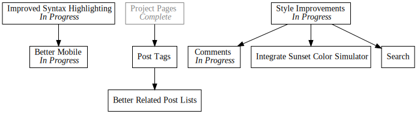

Day14 - Blog Style Updates
Improve Syntax Highlighting and Comments
2019-02-20

Today was another random website improvements day, so its going to be a bit light on actual blog content. I have had on my list for a while now, to rework the syntax highlighting and improve the experience on mobile. As it turns out, the two issues were related. Previously I had attempted to improve the mobile site by adding the following to the base site template:
<meta name="viewport" content="width=device-width, user-scalable=false">
This made things somewhat better, but the content was still pushed to the left side of the screen on some pages. After some fumbling about I eventually discovered the reason for it was that long code lines were pushing the size of the page to be wider than the main content width.
Syntax Highlighting
Unfortunately the default syntax highlighting in
Zola simply uses a pre tag with the code formatted
inside. This doesn't give me sufficient control over the styling and in general
leaves a bunch to be desired. So I decided to replace the default highlighting
with
Prism.
This was pretty simple, and just required configuring the language list on the
download page (I checked all the things), picking a theme, and downloading both
the style sheet and the JavaScript file and referencing them in the base
template.
<head>
<meta name="viewport" content="width=device-width, user-scalable=false">
<link href="https://fonts.googleapis.com/css?family=Roboto" rel="stylesheet">
<link rel="stylesheet" href="https://unpkg.com/basic-css-typography-reset@1.0.0/typography.min.css">
<link rel="stylesheet" href="{{ get_url(path="/style.css") }}">
<link rel="stylesheet" href="{{ get_url(path="/prism.css") }}">
{% block head %}{% endblock head %}
<title>02Credits {% block title %}{% endblock title %}</title>
</head>
Unfortunately I also needed to change the method of adding code tags. Instead of using the normal markdown strategy:
``` Language
```
I needed to switch to a hand written "shortcode" which is a way of embedding
templates directly into the post markdown. To enable it I adding a code.html
file to the templates/shortcodes/ folder in the site source with this content:
<pre>
<code{% if lang %} class="language-{{lang}}"{% else %} class="language-text"{% endif %}>{{ body }}</code>
</pre>
Then anywhere I needed to add some source I can use the shortcode like so:
{% code(lang="javascript") %}
console.log("Hello World!");
{% end %}
This works great, however the code is left aligned on the screen. So I decided to take the opportunity to make things a little more fancy as well with these style changes:
pre {
display: flex;
}
pre code {
flex-grow: 100;
text-align: left;
max-width: 8.5in;
margin-left: auto;
margin-right: auto;
}
This causes the content of the highlighted code to line up with the main content column, but cause the background to stretch to the edges of the screen as you can see above. Much nicer, and works on mobile. Two in one!
Comments
While I was working on the site format, I also decided to add a comment service to the page. Recently I saw a link to Commento which bills itself as a more privacy focused comment competitor for the popular Disqus. As the site rightfully points out, with free products, you aren't the customer. Instead you are the product. So I gladly dished out the $5 subscription fee (its actually pay what you want, but I picked $5) to add comments to the blog!
Following the instructions on the site, I added this snippet to the page template:
<div id="commento"></div>
<script src="https://cdn.commento.io/js/commento.js"></script>
And a few style fiddlings later and everything was working great!
Image Size
Lastly I noticed that the todo list images tend to grow past the edge of the content and screen, so I employed a trick to make sure the image is always visible, but not too big.
img {
max-width: 100vw;
}
@media (min-width: 8.5in) {
img {
max-width: 8.5in;
}
}
The idea is to use the @media query to change the max-width rule when the size
is over the 8.5 inch max content size. This way over 8.5 inches, the image is
locked to 8.5 inches, but below the limit, the image maxes out to the screen
width. Pretty simple, but effective and really improves the feel of the site.
Hopefully these changes make the blog more readable and easy to use. I'm going to give it a few days, but I think the blog is getting close to public facing! I may start pushing it more to friends and family and posting on Show Hacker News. We'll see.
Till tomorrow,
Keith